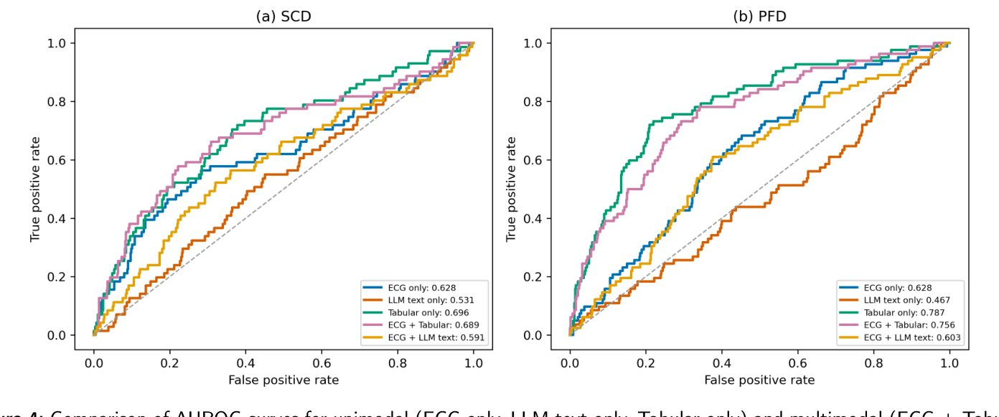
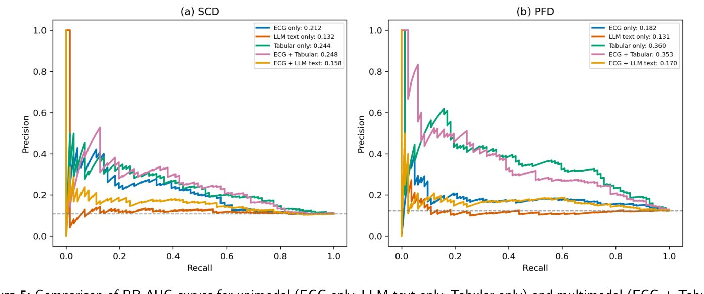
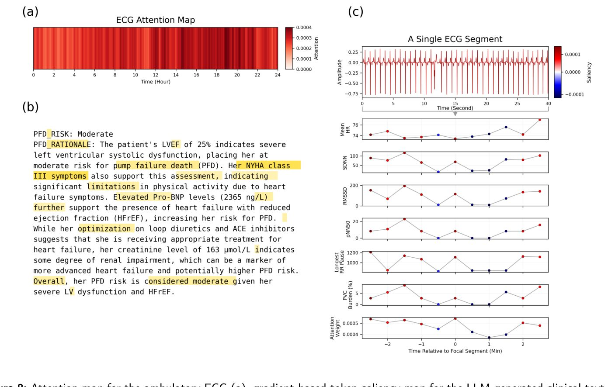
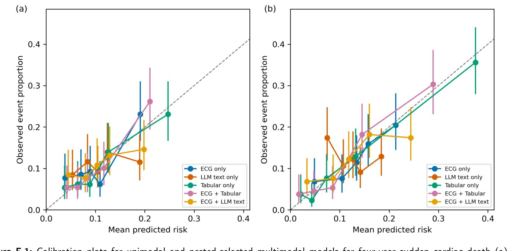

Может ли искусственный интеллект предсказать риск внезапной сердечной смерти

Полное описание рисунка
Рис. 1. Мультимодальный рабочий процесс для анализа амбулаторных записей ЭКГ совместно с клиническими данными. Записи ЭКГ проходят предварительную обработку и сегментируются на короткие окна. Для каждого окна извлекаются показатели вариабельности сердечного ритма (ВСР), которые кодируются с помощью нейронной сети Multiple Instance Learning–Temporal Convolutional Network (MIL–TCN), формируя представление ЭКГ, 𝜀ECG. Параллельно клинические переменные представляются в виде текста, сгенерированного большой языковой моделью (LLM), детерминированного клинического текста или табличных признаков. Текст, сгенерированный LLM, и детерминированный текст кодируются с помощью биомедицинского текстового энкодера для получения текстовых представлений на уровне пациента, 𝜀TXT, в то время как предварительно обработанные табличные переменные формируют табличное представление, 𝜀TAB. Представления ЭКГ, текста и табличных данных оценивались как унимодальные модели, а текстовые и табличные представления также объединялись с представлением ЭКГ в мультимодальных моделях для прогнозирования внезапной сердечной смерти (SCD) и смерти от сердечной недостаточности (PFD). Пунктирные линии указывают на использование либо текстового (TXT), либо табличного (TAB) представления для мультимодального слияния.
Внезапная сердечная смерть и сердечная недостаточность остаются серьезными вызовами для медицины. Исследователи разработали модель, которая анализирует записи ЭКГ вместе с медицинскими картами пациентов. Оказалось, что сочетание цифровых данных и структурированной клинической информации работает лучше, чем использование только текстов или только графиков ЭКГ.
Главное
- Модель анализирует 30-секундные сегменты ЭКГ через нейросеть MIL-TCN.
- Для прогноза внезапной смерти лучше всего работает сочетание ЭКГ и текста.
- Табличные клинические данные оказались наиболее точными для оценки риска сердечной недостаточности.
Подробнее
Авторы работы использовали данные когорты MUSIC (730 пациентов), чтобы оценить риск летальных исходов в течение четырех лет. Для анализа электрической активности сердца применялась архитектура MIL-TCN (множественное обучение с временной сверточной нейросетью), которая обрабатывает 30-секундные сегменты холтеровского мониторирования. Клинические данные были представлены в трех форматах: структурированные таблицы, детерминированные текстовые описания и отчеты, сгенерированные большими языковыми моделями (LLM).
Результаты показали, что для прогнозирования внезапной сердечной смерти (SCD) комбинация ЭКГ и детерминированного текста достигла AUROC 0,711. В случае смерти от сердечной недостаточности (PFD) наиболее эффективной оказалась модель на основе табличных данных (AUROC 0,787). Исследование подтвердило, что эффективность мультимодальных моделей сильно зависит от способа представления клинических данных, при этом простые структурированные форматы часто превосходят сложные LLM-описания.
Ограничения
Это препринт без независимой рецензии, выполненный на ограниченной выборке, что требует проверки на более крупных и разнообразных группах пациентов.
Полный перевод статьи
Резюме
Амбулаторные электрокардиограммы (ЭКГ) обеспечивают непрерывный мониторинг электрической активности сердца, однако многие подходы машинного обучения анализируют эти записи без учета широкого клинического контекста пациента. Мы оценили мультимодальную структуру, объединяющую представления, полученные из амбулаторной ЭКГ, с клинической информацией для прогнозирования внезапной сердечной смерти (ВСС) и смерти от сердечной недостаточности (СНС) на четырехлетний период. Анализ включал 730 пациентов из когорты MUSIC, из которых 71 случай ВСС и 82 случая СНС. Амбулаторные записи ЭКГ были сегментированы и закодированы с использованием нейронной сети с временной сверткой и обучением на множественных экземплярах (multiple instance learning), в то время как клинические переменные были представлены в виде текста, сгенерированного большой языковой моделью (LLM), детерминированного текста или табличных признаков.
Пояснение
Multiple instance learning (обучение на множественных экземплярах) — метод машинного обучения, где модель классифицирует не отдельные объекты, а группы объектов («мешки»), что подходит для анализа длинных записей ЭКГ.
Модели были разработаны и оценены с использованием вложенной кросс-валидации на уровне пациентов с пятью внешними и четырьмя внутренними фолдами; при этом предобработка, выбор модели и архитектуры слияния, калибровка и выбор пороговых значений были ограничены только обучающими данными. Для ВСС комбинация ЭКГ и детерминированного текста достигла наивысшего AUROC 0,711 (95% ДИ, 0,643–0,773), тогда как ЭКГ в сочетании с табличными клиническими признаками показала наивысший PR-AUC 0,248 (0,180–0,357). Для СНС унимодальная табличная модель достигла наивысшего AUROC 0,787 (0,732–0,839) и PR-AUC 0,360 (0,275–0,470), в то время как ЭКГ с табличными признаками показала AUROC 0,756 (0,697–0,811) и PR-AUC 0,353 (0,261–0,461). Комбинация ЭКГ и текста LLM показала лучшие результаты, чем текст LLM отдельно, но не превзошла унимодальную модель ЭКГ.
Важно
Мультимодальная интеграция ЭКГ и клинических данных показала зависимость эффективности от типа представления данных: детерминированные и табличные форматы оказались более прогностически ценными, чем тексты, сгенерированные LLM.
Анализ атрибуции и маскирования токенов предоставил дополнительные доказательства того, что объяснения модели были частично устойчивы к поверхностным возмущениям входных данных, оставаясь при этом чувствительными к условиям моделирования и маскирования. Анализ перестановок представлений и текстов пациентов показал, что прогностическая ценность сильно зависит от способа представления клинической информации. Эти результаты указывают на то, что преимущество мультимодальной интеграции зависит от исхода и способа представления данных.
Осторожно
Исследование является наблюдательным (когорта MUSIC), поэтому выявленные связи не доказывают причинно-следственную зависимость; результаты зависят от специфики выбранных методов представления клинических данных.
Введение
Внезапная сердечная смерть (ВСС) и смерть от сердечной недостаточности (ССН) являются двумя основными причинами смертности при сердечной недостаточности. Несмотря на достижения в фармакотерапии и медицинских устройствах, точное выявление лиц с повышенным риском этих исходов остается сложной клинической задачей. Амбулаторная электрокардиография (ЭКГ), включая длительный мониторинг по Холтеру, позволяет непрерывно оценивать сердечный ритм, фиксируя транзиторные аритмии, эктопическую активность и эпизодические нарушения проводимости. Эти преходящие изменения несут важную прогностическую информацию для оценки риска ВСС и ССН.
Важно
Внезапная сердечная смерть и смерть от сердечной недостаточности остаются критическими проблемами, а амбулаторная ЭКГ предоставляет важные, но трудно интерпретируемые данные для прогнозирования.
Однако интерпретация амбулаторных записей ЭКГ для получения надежных и практически значимых предикторов долгосрочной сердечной смертности остается сложной и ресурсоемкой задачей в рутинной практике. Модели машинного обучения (МО) и искусственного интеллекта (ИИ) продемонстрировали потенциал в решении этих проблем. Модели ИИ/МО показали высокую эффективность в описании морфологии волн (например, зубцов P, длительности QRS) и выявлении аритмических событий (например, фибрилляции предсердий, трепетания предсердий). Параллельно большие языковые модели (БЯМ) продемонстрировали способность к рассуждению как над структурированными, так и над неструктурированными наборами данных. Адаптированные к предметной области медицинские БЯМ могут синтезировать клинические признаки (например, демографические данные, историю болезни, лабораторные показатели) и генерировать биомедицинские выводы.
Пояснение
БЯМ (LLM) — это алгоритмы, обученные на огромных массивах текста, способные анализировать медицинские карты и делать логические выводы, подобно экспертам.
Несмотря на эти достижения, остаются существенные пробелы. Многие модели ИИ/МО для анализа амбулаторной ЭКГ являются одномодальными, фокусируясь преимущественно на выявлении паттернов внутри самой записи ЭКГ без учета более широкого клинического контекста пациента. Предыдущие исследования показывают, что клинический контекст может влиять на интерпретацию ЭКГ как врачами, так и моделями ИИ/МО. Таким образом, интеграция записей ЭКГ с клинической информацией о пациенте может предоставить дополнительные данные для прогнозирования исходов. Однако мультимодальная интеграция не обязательно улучшает производительность: её ценность может зависеть от исхода, представления каждой модальности, степени перекрытия информации и стратегии объединения данных. Следовательно, необходимы строгие сравнения с одномодальными и традиционными моделями на структурированных данных, чтобы установить, когда мультимодальные подходы дают значимые преимущества, а когда нет.
Осторожно
Мультимодальные модели не всегда превосходят одномодальные; их успех зависит от качества данных и стратегии их объединения, что требует тщательной проверки.
Для решения этой задачи мы разработали и систематически оценили мультимодальную структуру, объединяющую представления на уровне пациента, полученные из записей амбулаторной ЭКГ, с клинической информацией, представленной в виде структурированных переменных, детерминированного текста или оценок, сгенерированных БЯМ. В качестве клинического примера мы использовали прогнозирование ВСС и ССН на четырехлетний период. Мы провели сравнительный анализ одномодальных и мультимодальных подходов в рамках единой вложенной перекрестной проверки и изучили, как производительность варьируется в зависимости от исходов и клинических представлений. Основной вклад этого исследования заключается в следующем: 1. Строгий сравнительный анализ амбулаторной ЭКГ, табличных клинических переменных, детерминированного клинического текста и клинических оценок, сгенерированных БЯМ, для прогнозирования ВСС и ССН на четыре года, включая как одномодальные модели, так и модели слияния ЭКГ и клинических данных. 2. Структура вложенной перекрестной проверки, в которой стратегии мультимодального слияния (конкатенация, проецируемая конкатенация, скалярное стробирование, векторное стробирование и взвешенная сумма) сравнивались и выбирались только с использованием обучающих данных, что позволило оценить мультимодальную интеграцию, минимизируя при этом предвзятость выбора модели. 3. Набор анализов представления и надежности, разработанных для того, чтобы отличить дополнительную мультимодальную информацию от пересказа или дублирования структурированных переменных, включая сравнения с традиционными табличными моделями, детерминированным текстом, абляцию рассуждений и меток риска, анализ перекрытия ЭКГ, перестановку данных «пациент-текст», а также анализ стабильности атрибуции и возмущений.
2. Связанные работы
2.1. Анализ амбулаторной ЭКГ
Ранние вычислительные исследования подчеркивали важность извлечения признаков во временной и частотной областях для сопоставления паттернов амбулаторной ЭКГ с сердечными фенотипами. Badilini и соавт. применяли спектральный анализ для оценки циркадных вариаций и эффектов бета-блокаторов, в то время как Bakhshi и соавт. использовали авторегрессионное моделирование второго порядка и линейную классификацию для различения аритмий от синусового ритма. Более поздние работы перешли к глубокому обучению для автоматизации обучения представлений и классификации ритмов. Huang и соавт. преобразовали сегменты ЭКГ в спектрограммы и применили двухмерные сверточные нейронные сети для классификации ритма, тогда как Biton и соавт. предложили Ar-Net2 для моделирования временных зависимостей между интервалами RR. Ben-Moshe и соавт. представили RawECGNet для учета сдвигов распределения и обнаружения фибрилляции предсердий непосредственно по 30-секундным записям. Han и соавт. объединили представления Gramian Angular Field с обучением по множествам (multiple instance learning) для обнаружения аритмий. Sameh и соавт. исследовали, как изменение временного контекста и представления входных данных амбулаторной ЭКГ влияют на обнаружение фибрилляции и трепетания предсердий.
В этих подходах записи амбулаторной ЭКГ обычно анализируются как совокупности более коротких сегментов, при этом прогнозы генерируются на уровне сегмента, а в некоторых случаях агрегируются с помощью таких механизмов, как обучение по множествам, для получения результатов на уровне всей записи. Однако эти стратегии часто ограничиваются локализованным обнаружением ритма.
2.2. LLM и мультимодальная интеграция
LLM и адаптированные к предметной области языковые модели изучались на предмет их полезности для понимания клинических текстов и приложений поддержки принятия решений. Ли и соавторы представили BioBERT, а Хуан и соавторы разработали ClinicalBERT; обе модели используют предварительное обучение на специализированных данных для адаптации архитектуры трансформеров к биомедицинским и клиническим корпусам с целью улучшения кодирования клинических описаний и структурированных данных электронных медицинских карт. Совсем недавно Се и соавторы предложили Me-LLaMA, а Ли и соавторы представили LLaVA-Med, исследуя стратегии настройки инструкций и мультимодального выравнивания для обеспечения клинического мышления более высокого уровня, включая обобщение, ответы на вопросы и прогнозирование исходов на основе гетерогенной информации о пациентах.
Ян и соавторы создали ECG-LM, которая обрабатывает как кратковременные ЭКГ, так и клинические заметки для классификации аритмических событий и предложения стратегий лечения. Эти подходы применяют языковые модели к текстовым данным и, в некоторых случаях, к сигналам кратковременной ЭКГ, фокусируясь в первую очередь на обучении представлений и задачах классификации аритмий. Насколько нам известно, существует ограниченное количество работ по интеграции клинического контекста пациента с 24-часовыми сигналами амбулаторной ЭКГ.
Важно
Существующие модели (BioBERT, ClinicalBERT, Me-LLaMA, LLaVA-Med, ECG-LM) успешно работают с текстами и короткими записями ЭКГ, однако интеграция клинического контекста с 24-часовым мониторированием ЭКГ остается малоизученной областью. [!tip] LLM (Large Language Models) — это нейросети, обученные на огромных массивах текста, способные понимать и генерировать человеческую речь, а мультимодальность означает способность модели одновременно обрабатывать разные типы данных, например, текст и графики ЭКГ.
Обсуждение
Мы систематически оценивали стратегии мультимодального объединения данных, интегрирующие представления, полученные из амбулаторной ЭКГ, с клиническими текстами и табличными данными. Мультимодальная интеграция не всегда приносила пользу и сильно зависела от способа представления клинической информации. Для внезапной сердечной смерти (SCD) комбинация ЭКГ и детерминированного текста достигла наивысшего AUROC, тогда как комбинация ЭКГ и табличных клинических признаков показала лучший результат по PR-AUC. Для прогрессирующей сердечной недостаточности (PFD) унимодальная табличная модель оставалась наиболее эффективной в целом, в то время как комбинация ЭКГ и табличных признаков значительно превосходила унимодальную модель ЭКГ, но не превосходила табличные признаки сами по себе. Комбинация ЭКГ и полного текста, сгенерированного LLM, улучшила показатели по сравнению с унимодальной моделью LLM для обоих исходов, но не превзошла унимодальную модель ЭКГ. Среди унимодальных клинических представлений детерминированные и табличные данные, как правило, обеспечивали более высокую дискриминационную способность, чем полная оценка, сгенерированная LLM, особенно для PFD.
Важно
Эффективность мультимодальных моделей зависит от способа представления клинических данных: табличные признаки часто превосходят текстовые описания, сгенерированные LLM, в задачах прогнозирования SCD и PFD.
Эти результаты показывают, что клинический контекст может дополнять данные амбулаторной ЭКГ, однако его прогностическая ценность зависит как от исхода, так и от используемого метода представления. Помимо прогностической эффективности, мы представили визуализации внимания ЭКГ и значимости текста на уровне пациента в мультимодальных моделях. Связывая сегменты ЭКГ, на которые модель обращает внимание, с соответствующими признаками вариабельности сердечного ритма и клиническим текстом, этот анализ выявляет признаки, связанные с индивидуальными прогнозами модели. Рейтинги атрибуции были относительно стабильны к поверхностным возмущениям входных данных, но более чувствительны к изменениям параметров обученной модели. Анализ маскирования токенов дополнительно показал, что маскирование токенов с наивысшим рангом по абсолютной атрибуции градиентов обычно приводило к большим изменениям предсказанной вероятности, чем маскирование случайных токенов, хотя величина этого различия варьировалась в зависимости от исхода и доли маскирования.
Пояснение
Атрибуция (attribution) — метод интерпретации ИИ, позволяющий определить, какие именно входные данные (например, сегменты ЭКГ или слова в тексте) внесли наибольший вклад в итоговое решение модели.
Абляции представлений и перекрытий показали, что детерминированный текст и прямые табличные клинические переменные сохраняют больше прогностической информации, чем полная оценка, сгенерированная LLM. Добавление заключений ЭКГ оказало незначительное влияние на табличную производительность и было более полезным для представления LLM при PFD, чем при SCD. Одно из возможных объяснений заключается в том, что нарушения ритма могут предоставлять дополнительный контекст для маркеров тяжести сердечной недостаточности и снижения сердечного резерва, которые более напрямую связаны с прогрессирующей насосной недостаточностью, тогда как гетерогенный аритмогенный субстрат, лежащий в основе SCD, может быть менее полно охвачен этими пятью категориальными заключениями Холтера. Однако эта интерпретация остается предварительной, особенно потому, что добавление тех же заключений ЭКГ к табличным моделям привело лишь к умеренным изменениям производительности для обоих исходов. Кроме того, перемешивание соответствия «пациент-текст» мало повлияло на эффективность слияния ЭКГ и LLM, что позволяет предположить, что сохранение специфического соответствия пациенту в полном текстовом представлении LLM не дало измеримого преимущества в производительности в рамках данного анализа.
Осторожно
Исследование основано на данных одного набора, что ограничивает возможность обобщения результатов; кроме того, малый объем событий SCD и PFD может снижать устойчивость моделей.
Исследовательский анализ кривых принятия решений показал аналогичную закономерность, зависящую от представления данных. Модели, включающие исходные табличные клинические признаки, демонстрировали наиболее широкие области положительной чистой выгоды по сравнению со стратегиями «лечить всех» и «не лечить», особенно для PFD, тогда как комбинация ЭКГ и полного текста LLM показала более ограниченную выгоду в оцениваемом диапазоне порогов. Поскольку эти пороги были исследовательскими и не были связаны с валидированной стратегией вмешательства, эти результаты следует интерпретировать как сравнительную оценку потенциальной клинической полезности, а не как доказательство для конкретного порога лечения. Следует учитывать несколько ограничений. Во-первых, исследование проводилось на одном наборе данных; необходима внешняя валидация для оценки возможности обобщения. Во-вторых, относительно ограниченное количество событий SCD и PFD может ограничивать надежность модели, особенно для прогнозирования редких исходов. В-третьих, текущая структура опирается на спроектированные признаки вариабельности сердечного ритма, а не на сквозное моделирование необработанного сигнала, что может ограничивать захват более сложной информации на уровне формы волны. Кроме того, качество и согласованность рассуждений, сгенерированных языковой моделью, могут вносить вариативность в текстовые представления. Будущие работы должны оценить эти подходы на независимых когортах, исследовать сквозные представления необработанной ЭКГ и изучить методы обучения более комплементарного выравнивания между временными рядами и клиническими представлениями.
Заключение
Мы представляем мультимодальную ИИ-систему, которая объединяет данные амбулаторной ЭКГ с различными формами клинической информации для прогнозирования внезапной сердечной смерти (ВСС) и смерти от сердечной недостаточности (СН) на четырехлетний период. Мультимодальное слияние данных было наиболее эффективным для отдельных комбинаций исходов и представлений, а не равномерно для всех модальностей. Для ВСС комбинация ЭКГ и детерминированного текста обеспечила наивысший показатель AU-ROC, тогда как комбинация ЭКГ и табличных клинических признаков показала наивысший PR-AUC; для смерти от СН унимодальная табличная модель оставалась наиболее эффективной. Комбинация ЭКГ и полного текста, обработанного LLM, показала лучшие результаты, чем текст LLM сам по себе, но не превзошла унимодальную модель ЭКГ. Детерминированные и табличные представления в целом сохраняли больше прогностической информации, чем полная оценка, сгенерированная LLM, а перестановки пациент-текст показали ограниченную измеримую пользу от сохранения специфической для пациента корреспонденции внутри полного текстового представления LLM. Анализы внимания, атрибуции и маскирования токенов предоставили дополнительные сведения о поведении модели, подчеркнув при этом чувствительность объяснений к выбору модели и возмущениям данных. В целом, эти результаты подчеркивают важность выбора модальности и представления клинической информации при мультимодальном прогнозировании сердечных исходов и обосновывают необходимость дальнейшей оценки мультимодальных подходов с учетом особенностей представления данных на внешних когортах.
Важно
Мультимодальное слияние данных не всегда превосходит унимодальные модели, при этом детерминированные и табличные представления часто сохраняют больше прогностической информации, чем полные тексты LLM.
Пояснение
AU-ROC и PR-AUC — метрики качества классификации: первая оценивает общую способность модели разделять классы, вторая — точность при выявлении редких событий.
Осторожно
Исследование является прогностической моделью (TRIPOD+AI); результаты требуют внешней валидации на независимых когортах для подтверждения клинической значимости.
Методы
3.1. Представление ЭКГ 3.1.1. Предобработка ЭКГ
Все амбулаторные записи ЭКГ прошли стандартизированный конвейер предобработки для устранения шумов. Сигналы были пропущены через полосовой фильтр 0,5–40 Гц с использованием фильтра Баттерворта четвертого порядка для ослабления дрейфа изолинии и высокочастотных помех. Дрейф изолинии дополнительно корректировался с помощью медианной фильтрации в окне 0,8 секунды, после чего оценочный компонент изолинии вычитался из отфильтрованного сигнала. Затем R-пики детектировались один раз для каждой полной записи с помощью NeuroKit2, чтобы обеспечить согласованную локализацию сердечных сокращений по всей амбулаторной записи. Полная обработка NeuroKit2 впоследствии выполнялась для получения физиологических дескрипторов, включая мгновенную частоту сердечных сокращений и показатели качества сигнала. Каждая обработанная запись была разделена в хронологическом порядке на неперекрывающиеся 30-секундные сегменты. Сохранялись только полные сегменты. Внутри каждого сегмента вычислялись показатели вариабельности сердечного ритма (ВСР) во временной области, включая SDNN, RMSSD и pNN50. Полученные признаки на уровне сегментов сохранялись как векторы признаков для последующего моделирования. Подробная таблица вычисленных признаков приведена в Таблице А.1 в Приложении А.
Пояснение
Предобработка ЭКГ включает фильтрацию шумов, коррекцию дрейфа изолинии и сегментацию записи на 30-секундные отрезки для извлечения признаков ВСР.
3.1.2. Обучение с множественными экземплярами и временное сверточное кодирование
В рамках парадигмы обучения с множественными экземплярами (MIL) каждая запись пациента представлялась как «мешок» хронологически упорядоченных экземпляров на уровне сегментов. Каждому пациенту 𝜗 присваивались бинарные индикаторы исхода для внезапной сердечной смерти (SCD) и смерти от сердечной недостаточности (PFD), обозначенные как 𝜛SCD, 𝜛PFD ∈ {0, 1}. Амбулаторная ЭКГ каждого пациента представлялась 𝜚𝜗 неперекрывающимися 30-секундными сегментами, формируя мешок ∱𝜗 = {𝜍𝜗𝜑}𝜚𝜗 𝜑=1, (1) где 𝜍𝜗𝜑 ∈ ℝ𝛻 обозначает вектор признаков ЭКГ для сегмента 𝜑, а 𝛻 — количество входных признаков после предобработки. Количество сегментов 𝜚𝜗 варьировалось у разных пациентов в зависимости от длительности записи и количества полных сегментов. Каждый сегмент сначала проецировался в пространство эмбеддингов с использованием общего кодировщика признаков 𝜕ℵ: ℝ𝛻 → ℝ:
ℷ𝜗𝜑 = 𝜕ℵ(𝜍𝜗𝜑). (2) Для моделирования временных зависимостей между сегментами упорядоченные эмбеддинги сегментов собирались как 𝛚(0) = [ℷ𝜗1 ⋛ ℷ𝜗𝜚𝜗] (3) и обрабатывались остаточной временной сверточной сетью (TCN). 𝜸-й блок применял одномерную причинную свертку с дилатацией 2𝜸, за которой следовали функция активации ReLU и dropout:
𝛚(𝜸+1) = ∲(𝜸) { ReLU { Conv(𝜸) ⊳,2𝜸 { 𝛚(𝜸) }} } + ∳(𝜸) { 𝛚(𝜸) }, (4) где ⊳ — размер сверточного ядра, ∲(𝜸) обозначает dropout, а ∳(𝜸) — либо тождественное отображение, либо обученная проекция, когда размерности входа и выхода различаются. Заполнение (padding) с последующим усечением справа сохраняло исходную длину последовательности. Выход, соответствующий сегменту 𝜑 после финального временного блока, обозначен как ⊲ℷ𝜗𝜑. Последовательность переменной длины агрегировалась в вектор на уровне пациента с использованием MIL-пулинга на основе внимания:
0𝜗𝜑 = 𝛆1 2tanh { 𝛝1⊲ℷ𝜗𝜑 + 𝜡1 } + 𝜡2, (5a)
3𝜗𝜑 = exp(0𝜗𝜑) / ∑𝜚𝜗 𝜑=1 exp(0𝜗𝜑), (5b)
Вектор, полученный с помощью пулинга внимания, преобразовывался общим слоем представления на уровне пациента: 𝜀ECG = 56 ⟩4ECG ∈ ℝ7, (6) где 7 обозначает выбранную размерность представления ЭКГ. Полученное представление ЭКГ, 𝜀ECG ∈ ℝ7, передавалось в отдельные специализированные ветви для прогнозирования SCD и PFD.
Пояснение
MIL-пулинг на основе внимания позволяет модели динамически определять значимость каждого 30-секундного сегмента ЭКГ для итогового прогноза риска смерти пациента.
3.2. Представление клинических признаков через языковые модели 3.2.1. Построение промптов
Мы использовали две большие языковые модели (LLM), настроенные на инструкции: LLaMA-3.1-8B-Instruct и LLaMA-3.2-3B-Instruct. Эти LLM использовались для генерации клинических оценок на основе клинических признаков пациентов. Клинические переменные анализировались и вставлялись в стандартизированный шаблон, описывающий демографические данные, сопутствующие заболевания, лекарственные препараты, лабораторные показатели и, для условий с включением ЭКГ, сводные данные амбулаторной ЭКГ. Переменные с отсутствующими базовыми значениями исключались из текста конкретного пациента, а не импутировались или выводились LLM. Каждый промпт содержал полные инструкции к задаче и клинические признаки пациента; дополнительные системные сообщения с клиническими инструкциями при выводе не добавлялись. Промпты для оценки полного риска предписывали модели независимо оценить четырехлетний риск SCD и PFD. Модель должна была предоставить категориальные оценки риска (низкий, умеренный или высокий) вместе с отдельными пояснительными обоснованиями для каждого исхода. Оценивались три текстовых условия, сгенерированных LLM: полная оценка четырехлетнего риска без данных ЭКГ, нейтральное клиническое резюме без данных ЭКГ и полная оценка четырехлетнего риска с данными ЭКГ. Условие с включением ЭКГ оценивалось только как абляция и не использовалось в основном анализе текста LLM. Представления, содержащие только метки риска или только обоснования, были впоследствии получены из структурированных ответов о полном риске. Для сравнения было создано детерминированное текстовое представление непосредственно из заполненного шаблона информации о пациенте. Это представление сохраняло те же клинические переменные в фиксированном порядке полей, но не содержало резюме, оценки риска или обоснования, сгенерированных LLM, и служило контролем для представления структурированных переменных в текстовой форме. Метки исходов или информация о последующем наблюдении после индексной даты в промпты не включались. Все шаблоны промптов можно найти в Приложении B.
3.2.2. Генерация текстовых эмбеддингов
Пусть текстовый ввод для пациента 𝜗, состоящий либо из клинического текста, сгенерированного LLM, либо из детерминированного текста, обозначается как 8𝜗. Каждый текстовый ввод кодировался с использованием замороженного биомедицинского текстового кодировщика, либо BioBERT, либо ClinicalBERT, для получения эмбеддинга фиксированной длины 0𝜗 ∈ ℝ9, полученного из финального скрытого представления токена [CLS]. Эти эмбеддинги служили представлениями сгенерированного или детерминированного клинического текста на уровне пациента. Затем каждый эмбеддинг пропускался через преобразование признаков ℷ6: ℝ9 → ℝ, реализованное либо как линейный слой, либо как многослойный перцептрон, для получения представления на уровне пациента 𝜀TXT = ℷ6(0𝜗). (7) Представление 𝜀TXT затем передавалось в специализированные ветви для прогнозирования SCD и PFD.
Пояснение
Использование предобученных моделей BioBERT/ClinicalBERT позволяет преобразовать структурированные клинические данные в векторные представления (эмбеддинги) для последующего анализа риска.
3.3. Табличные модели клинических признаков
Чтобы оценить, сохраняют или улучшают ли предиктивную ценность структурированные клинические переменные при их преобразовании в текст, те же переменные были смоделированы непосредственно в табличном виде. Первичное табличное условие включало исходные демографические данные, клинические характеристики, историю болезни, лабораторные показатели, функцию сердца и медикаменты, использованные для формирования промптов LLM без информации ЭКГ. Второе условие дополнительно включало пять заключений ЭКГ по данным холтеровского мониторирования, использованных в промпте с ЭКГ: желудочковую экстрасистолию, желудочковую тахикардию, неустойчивую желудочковую тахикардию, пароксизмальную наджелудочковую тахиаритмию и брадикардию. Это табличное условие с ЭКГ оценивалось только как абляция и не использовалось в основных табличных анализах. Для импутации пропущенных данных непрерывные переменные заменялись их медианными значениями и дополнялись индикаторами пропусков, тогда как пропущенные бинарные и категориальные значения представлялись как отдельная категория. Непрерывные переменные впоследствии стандартизировались до среднего значения, равного нулю, и стандартного отклонения, равного единице, а бинарные и категориальные переменные подвергались one-hot кодированию. Все параметры предобработки оценивались только с использованием данных, доступных для подгонки модели, и применялись без изменений во время оценки. Дополнительно оценивались два семейства традиционных табличных моделей: логистическая регрессия с L2-регуляризацией и градиентный бустинг на основе гистограмм. Отдельные модели были построены для прогнозирования SCD и PFD.
3.4.1. Подготовка представлений ЭКГ, текста и табличных данных
Пусть \beth0, \beth8 и \beth. обозначают размерности представлений ЭКГ, текста и табличных данных соответственно. Для модальности ЭКГ обученный энкодер MIL–TCN был заморожен, и для каждого пациента извлекалось представление на уровне пациента \varepsilonECG \in \mathbbR\beth0, полученное из выхода с механизмом внимания (attention-pooled). Для текстовой модальности эмбеддинги \varepsilonTXT \in \mathbbR\beth8 были получены из замороженного биомедицинского текстового энкодера. Они включали эмбеддинги оценок риска, сгенерированных LLM, и детерминированного клинического текста. Для табличной модальности \varepsilonTAB \in \mathbbR\beth. представлял собой предобработанный вектор клинических признаков, включающий стандартизированные непрерывные переменные, индикаторы пропусков непрерывных переменных и one-hot кодированные категориальные переменные, как описано выше. Табличное представление использовалось напрямую, а не извлекалось из обученного табличного классификатора. Более того, представление ЭКГ объединялось отдельно с текстом, сгенерированным LLM, детерминированным текстом и табличными клиническими представлениями. Эти модально-специфичные представления служили входными данными для моделей мультимодального слияния, описанных ниже.
Пояснение
One-hot кодирование — метод преобразования категориальных данных в бинарные векторы, где только один элемент равен 1, а остальные 0, что позволяет моделям машинного обучения эффективно работать с нечисловыми признаками.
3.4.2. Стратегии мультимодального слияния
Учитывая представление ЭКГ \varepsilonECG и текстовое представление \varepsilonTXT для пациента \vartheta, мы оценили пять стратегий мультимодального слияния для получения объединенного представления $\varepsilon_{ abla \vartheta}. Те же стратегии использовались для слияния ЭКГ и табличных данных путем замены \varepsilon_{TXT} на соответствующее предобработанное табличное представление \varepsilon_{TAB}. Прямая конкатенация (DC) объединяет модально-специфичные представления без проекции: \varepsilon_{ abla \vartheta} = [\varepsilon_{ECG} \oplus \varepsilon_{TXT}]. (8) Проекционная конкатенация (PC) сначала отображает каждую модальность в общее латентное пространство: \beth_{ECG} = W_0 \varepsilon_{ECG} + b_0, \beth_{TXT} = W_8 \varepsilon_{TXT} + b_8, (9a) \varepsilon_{ abla \vartheta} = [\beth_{ECG} \oplus \beth_{TXT}], (9b) где W_0 и W_8$ — обучаемые матрицы проекции. Скалярное гейтирование (SG) использует скалярный гейт, специфичный для пациента, обусловленный обоими проекционными представлениями: g\vartheta = \sigma \ wgT [\bethECG \oplus \bethTXT] + bg \, (10a) $\varepsilon_{ abla \vartheta} = g_{\vartheta} \beth_{ECG} + (1 - g_{\vartheta}) \beth_{TXT}. (10b) Векторное гейтирование (VG) вычисляет вектор гейтирования, специфичный для пациента, обусловленный обеими модальностями: g_{\vartheta} = \sigma \{ W_g [\beth_{ECG} \oplus \beth_{TXT}] + b_g \}, (11a) \varepsilon_{ abla \vartheta} = g_{\vartheta} \star \beth_{ECG} + (1 - g_{\vartheta}) \star \beth_{TXT}, (11b) где \star обозначает поэлементное умножение. Взвешенная сумма (WS) комбинирует проекционные представления с использованием одного глобального обучаемого веса смеси: \varepsilon_{ abla \vartheta} = \lambda \beth_{ECG} + (1 - \lambda) \beth_{TXT}, \lambda = \sigma(s), (12) где s \in \mathbb{R} — обучаемый скалярный параметр, общий для всех пациентов. Во всех случаях \varepsilon_{ abla}$ передавалось в отдельные специализированные ветви прогнозирования для SCD и PFD. Для интерпретации мультимодальных моделей ЭКГ + текст LLM важность ЭКГ оценивалась с использованием весов внимания MIL, тогда как важность текста оценивалась с использованием градиентной салиентности токенов. Для каждого токена салиентность вычислялась как евклидова норма поэлементного произведения между его эмбеддингом и градиентом предсказанной вероятности SCD или PFD по отношению к этому эмбеддингу. Оценки токенов отображались обратно на сгенерированный LLM клинический текст для визуализации и, следовательно, отражают текстовый путь внутри подогнанной мультимодальной модели, а не внутренние веса внимания генератора LLaMA.
3.5.1. Функции потерь
Сети ЭКГ, текстовые и мультимодальные сети слияния обучались с использованием многозадачной цели для совместного прогнозирования SCD и PFD. Для каждой задачи мы использовали взвешенную функцию потерь бинарной кросс-энтропии, где вес положительного класса устанавливался как отношение отрицательных случаев к положительным в обучающих данных:
wt = \frac\rho(t)neg\rho(t)pos, t \in \SCD, PFD\. (13)
Пациенты с PFD исключались из функции потерь SCD, а пациенты с SCD исключались из функции потерь PFD, чтобы конкурирующие события сердечной смерти не рассматривались как отрицательные исходы. Пациенты без сердечной смерти вносили вклад как отрицательные случаи в обе задачи. Общая цель была суммой двух специфичных для задачи потерь: \mathcalL = \mathcalLSCD + \mathcalLPFD. (14) Традиционные табличные модели подгонялись отдельно для SCD и PFD с использованием того же подхода взвешивания классов по задачам и исключения конкурирующего исхода сердечной смерти.
3.5.2. Конфигурации LLM и биомедицинских текстовых энкодеров
Клинические текстовые выводы были сгенерированы с использованием Hugging Face Transformers v4.44.2 с двумя моделями, дообученными на инструкциях: LLaMA-3.1-8B-Instruct и LLaMA-3.2-3B-Instruct. Модели LLaMA загружались с точностью 16-битных чисел с плавающей запятой без квантования. При генерации использовалось детерминированное жадное декодирование (greedy decoding) с параметрами do_sample=False, максимум 256 новых токенов, штраф за повторение 1,1, размер пакета (batch size) четыре и генеративный seed 42. Параметры Temperature, top-p и top-k не применялись, так как выборка (sampling) была отключена. Генерация выполнялась с использованием четырех графических процессоров NVIDIA GeForce RTX 2080 Ti с балансировкой размещения устройств (см. раздел 3.5.3 для спецификаций оборудования). Весь инференс LLM выполнялся локально с использованием загруженных весов моделей; данные уровня пациента не передавались во внешние коммерческие сервисы LLM.
Пояснение
Инференс — это процесс использования уже обученной модели для получения предсказаний или генерации текста на новых данных.
Сгенерированные и детерминированные текстовые входные данные кодировались с использованием замороженных биомедицинских текстовых энкодеров BioBERT или ClinicalBERT. Энкодеры оставались замороженными, чтобы ограничить количество обучаемых параметров относительно количества когорт и событий, а также для снижения риска переобучения во время вложенного выбора модели. Такая архитектура также позволила сфокусировать сравнение на различиях, возникающих из представлений клинического текста, а не на адаптации биомедицинского текстового энкодера к конкретному исходу. Текст обрабатывался с максимальной длиной последовательности 512 токенов. Для входных данных, превышающих эту длину, перекрывающиеся фрагменты по 512 токенов с шагом (stride) 64 токена кодировались отдельно, а итоговые скрытые представления токенов [CLS] усреднялись по фрагментам для получения единого 768-мерного текстового эмбеддинга. Два генератора LLaMA и два биомедицинских текстовых энкодера определили четыре комбинации «LLaMA–энкодер». Хэши соответствующих моделей приведены в Таблице B.1 в Приложении B.
3.5.3. Протокол обучения, кросс-валидация и выбор модели
Все эксперименты проводились на сервере под управлением Linux с графическими процессорами NVIDIA GeForce RTX 2080 Ti. Нейронные модели были реализованы на PyTorch v2.5.1 с CUDA 12.4. Модели разрабатывались и оценивались с использованием вложенной кросс-валидации на уровне пациентов, с пятью взаимоисключающими внешними фолдами и четырьмя внутренними фолдами, а также базовым случайным seed 42. Фолды были стратифицированы по взаимоисключающим категориям четырехлетних исходов: отсутствие сердечной смерти, внезапная сердечная смерть (SCD) и вероятная сердечная смерть (PFD). Все сегменты ЭКГ, текстовые представления и табличные клинические представления одного пациента относились к одному и тому же фолду.
Внутри каждого внешнего обучающего фолда использовалась четырехкратная внутренняя кросс-валидация для всех этапов разработки модели, включая предобработку, масштабирование признаков, взвешивание классов, выбор гиперпараметров и конфигурации модели, раннюю остановку, выбор стратегии слияния, калибровку вероятностей и выбор порога классификации. После выбора модели выбранная конфигурация обучалась с использованием полного внешнего обучающего фолда и оценивалась один раз на соответствующем внешнем тестовом фолде. Внешний тестовый фолд оставался скрытым во время разработки модели, и его исходы не использовались для предобработки, настройки, калибровки, выбора порога или выбора модели. Подробности происхождения переменных и пространства поиска гиперпараметров приведены в Приложении C и Приложении D соответственно.
Пояснение
Вложенная кросс-валидация — метод оценки модели, при котором внутренний цикл используется для подбора параметров, а внешний — для оценки качества на данных, которые модель «не видела» при обучении.
Настройки ранней остановки были зафиксированы для всех конфигураций-кандидатов, а не рассматривались как настраиваемые гиперпараметры. Модели ЭКГ обучались максимум 30 эпох, с минимумом пять эпох и терпением (patience) семь эпох. Текстовые классификаторы и мультимодальные модели слияния обучались максимум 100 эпох, с минимумом 10 эпох и терпением 15 эпох. Сохранялась контрольная точка (checkpoint) с наивысшим средним значением AUROC на валидации для задач SCD и PFD. Для каждой конфигурации-кандидата предсказания из внутренних валидационных фолдов объединялись перед расчетом AUROC для SCD и PFD. Выбор модели основывался на среднем значении этих двух AUROC, при этом конечные точки имели равный вес. Конфигурации с абсолютной разницей AUROC в пределах 0,005 от конфигурации с наилучшими показателями сравнивались по сложности модели, а затем по среднему PR-AUC. Для нейронных моделей сложность определялась количеством обучаемых параметров. Для табличных моделей заранее установленный порядок отдавал предпочтение логистической регрессии с регуляризацией перед градиентным бустингом и отдавал предпочтение более простым, более сильно регуляризованным конфигурациям внутри каждого семейства моделей.
4. Эксперименты 4.1. Набор данных и выборка пациентов
Эксперименты проводились с использованием общедоступного набора данных MUSIC (MUerte S’ubita en Insuficiencia Cardiaca) — проспективной многоцентровой когорты пациентов с хронической сердечной недостаточностью. Набор данных содержит деидентифицированную клиническую информацию, включая демографические характеристики, анамнез, лабораторные показатели, медикаментозное лечение и параметры сердечной функции. В данном исследовании использовались только деидентифицированные переменные, доступные в открытом наборе данных; прямые идентификаторы пациентов в промпты LLM не включались. В исследование были включены 992 пациента из восьми испанских университетских больниц в период с апреля 2003 года по декабрь 2004 года, медиана периода наблюдения составила 44 месяца. Амбулаторные данные ЭКГ были получены с помощью регистраторов SpiderView (ELA Medical, Sorin Group, Париж, Франция) с двумя или тремя ортогональными отведениями (X, Y и Z), дискретизированными с частотой 200 Гц и разрешением по амплитуде 1 мкВ. Для анализа сигналов использовалось только отведение Y. Это отведение соответствует верхне-нижней электрической оси и имеет ориентацию, схожую с отведением II стандартной 12-канальной ЭКГ, что делает его пригодным для обнаружения сердечных сокращений и анализа вариабельности сердечного ритма с помощью NeuroKit2. Базовая 24-часовая холтеровская запись использовалась в качестве исходной точки, а исходы определялись на фиксированном четырехлетнем горизонте прогнозирования. Отбор когорты суммирован на Рис. 2, соответствующие исходные характеристики приведены в Таблице 1, а данные ЭКГ — в Таблице 2. Из 992 включенных пациентов мы исключили 56 человек без доступной холтеровской записи; 57 человек, чей зарегистрированный исход не попал в заранее определенные категории (отсутствие сердечной смерти, внезапная сердечная смерть (ВСС) и прогрессирующая сердечная недостаточность (ПСН)); 121 пациента с ранее установленным имплантируемым кардиологическим устройством; 12 человек, выбывших из исследования из-за трансплантации сердца; и 16 человек, чей четырехлетний исход не удалось установить. Два кода исходов набора данных, представляющие ПСН, были объединены в одну категорию; ВСС и ПСН были взаимоисключающими в пределах горизонта прогнозирования. Итоговая когорта включала 730 пациентов с тремя взаимоисключающими четырехлетними метками исходов: 577 без сердечной смерти, 71 с ВСС и 82 с ПСН. Вложенная перекрестная проверка на уровне пациентов использовала пять взаимоисключающих внешних фолдов по 146 пациентов в каждом, что дало 584 пациента для разработки модели во внешнем фолде и 146 пациентов для отложенной оценки в каждой итерации. Внешние фолды были стратифицированы по трем категориям исходов, и каждый внешний обучающий набор проходил четырехкратную внутреннюю перекрестную проверку для разработки и выбора модели. Для отдельных задач бинарной классификации группа ВСС сравнивалась с группой без сердечной смерти, при этом пациенты с ПСН исключались (n = 648).

Таблица 1. Инструкции по оценке риска
| Параметр | Формат вывода |
|---|---|
| Риск SCD (4 года) | SCD_RISK: <Low/Moderate/High> |
| Обоснование SCD | SCD_RATIONALE: <краткое обоснование> |
| Риск PFD (4 года) | PFD_RISK: <Low/Moderate/High> |
| Обоснование PFD | PFD_RATIONALE: <краткое обоснование> |
SCD — внезапная сердечная смерть; PFD — смерть от сердечной недостаточности.
Таблица 2. Общие правила оценки
| Правило | Описание |
|---|---|
| Исходные данные | Использовать только предоставленную информацию 24-часового Холтеровского мониторирования |
| Ограничения | Не выдумывать и не предполагать отсутствующую информацию |
| Запрещено | Использовать исход пациента, длительность наблюдения, причину смерти или последующие события |
| Формат | Строго следовать формату вывода, не добавлять рекомендации по лечению |
Пояснение
Вложенная перекрестная проверка (nested cross-validation) — метод оценки модели, при котором данные делятся на внешние блоки (для тестирования) и внутренние блоки (для настройки параметров), что позволяет избежать переобучения и получить более объективную оценку точности прогноза.
Медикаментозное лечение
Блокаторы кальциевых каналов 112 (15,3) 87 (15,1) 15 (21,1) 10 (12,2). Препараты для лечения диабета 221 (30,3) 160 (27,7) 26 (36,6) 35 (42,7). Амиодарон 130 (17,8) 93 (16,1) 18 (25,4) 19 (23,2). Блокаторы рецепторов ангиотензина II 131 (17,9) 106 (18,4) 10 (14,1) 15 (18,3). Антикоагулянты/антитромботические средства 610 (83,6) 487 (84,4) 59 (83,1) 64 (78,0). Бета-блокаторы 501 (68,6) 417 (72,3) 45 (63,4) 39 (47,6). Дигоксин 236 (32,3) 173 (30,0) 27 (38,0) 36 (43,9). Петлевые диуретики 512 (70,1) 392 (67,9) 53 (74,6) 67 (81,7). Спиронолактон 260 (35,6) 188 (32,6) 35 (49,3) 37 (45,1). Статины 324 (44,4) 256 (44,4) 35 (49,3) 33 (40,2). Гидралазин 20 (2,7) 14 (2,4) 3 (4,2) 3 (3,7). Ингибиторы АПФ 580 (79,5) 476 (82,5) 50 (70,4) 54 (65,9). Нитропрепараты 90 (12,3) 64 (11,1) 13 (18,3) 13 (15,9). Значения основаны на доступных исходных наблюдениях; пропущенные значения не импутировались для описательных сводок. Пропуски данных присутствовали для возраста (φ=1), альбумина (φ=1), гамма-глутамилтрансферазы (φ=1), глюкозы (φ=1), гемоглобина (φ=3), ЛПВП (φ=24), калия (φ=1), ЛПНП (φ=24), натрия (φ=1), Pro-BNP (φ=71), белка (φ=1), T3 (φ=273), T4 (φ=86) и тропонина (φ=110). Все остальные характеристики были полными. Для подгонки модели непрерывные переменные импутировались с использованием медианы соответствующего обучающего фолда с индикатором пропуска, в то время как пропущенные бинарные и категориальные переменные представлялись как отдельная категория.
Пояснение
Импутация — это статистический метод заполнения пропущенных данных в выборке, позволяющий сохранить размер набора данных для анализа.
Исходные данные ЭКГ по Холтеру в финальной четырехлетней когорте MUSIC, стратифицированные по исходу. Значения представлены как n (%).
ЭКГ-показатели
Желудочковая экстрасистолия: Нет 19 (2,6) 18 (3,1) 0 (0,0) 1 (1,3); Мономорфная 213 (29,5) 187 (32,7) 11 (15,7) 15 (18,8); Полиморфная 490 (67,9) 367 (64,2) 59 (84,3) 64 (80,0). Желудочковая тахикардия: Нет 460 (63,9) 387 (68,1) 35 (50,0) 38 (46,3); Неустойчивая ЖТ 260 (36,1) 181 (31,9) 35 (50,0) 44 (53,7). Неустойчивая желудочковая тахикардия: Нет 523 (71,6) 439 (76,1) 37 (52,1) 47 (57,3); Да 207 (28,4) 138 (23,9) 34 (47,9) 35 (42,7). Пароксизмальная суправентрикулярная тахиаритмия: Нет 406 (56,2) 332 (58,3) 35 (49,3) 39 (47,6); ТПСВ 168 (23,3) 135 (23,7) 16 (22,5) 17 (20,7); Пароксизмальная ФП 4 (0,6) 2 (0,4) 1 (1,4) 1 (1,2); Пароксизмальное трепетание предсердий 1 (0,1) 0 (0,0) 1 (1,4) 0 (0,0); Неприменимо из-за хронической ФП 143 (19,8) 100 (17,6) 18 (25,4) 25 (30,5). Брадикардия: Нет 532 (92,4) 435 (92,8) 46 (88,5) 51 (92,7); Дисфункция синусового узла 17 (3,0) 13 (2,8) 3 (5,8) 1 (1,8); АВ-блокада I степени 8 (1,4) 5 (1,1) 1 (1,9) 2 (3,6); АВ-блокада II степени, тип I 9 (1,6) 8 (1,7) 0 (0,0) 1 (1,8); АВ-блокада II степени, тип II 7 (1,2) 6 (1,3) 1 (1,9) 0 (0,0); АВ-блокада III степени 1 (0,2) 0 (0,0) 1 (1,9) 0 (0,0); Пароксизмальная АВ-блокада 2 (0,3) 2 (0,4) 0 (0,0) 0 (0,0).
Сравнение проводилось с группой без сердечной смерти, при этом пациенты с внезапной сердечной смертью (ВСС) были исключены (φ = 659). Подробная информация об исключениях из когорты и анализируемых популяциях по конечным точкам приведена в Приложении E.
4.2. Оценка эффективности
Эффективность оценивалась с использованием объединенных прогнозов внешнего теста. Прогнозы из всех пяти внешних фолдов объединялись отдельно для когорт конечных точек ВСС и ПФД, и каждая метрика эффективности рассчитывалась один раз на основе соответствующего объединенного набора отложенных прогнозов. Дискриминационная способность оценивалась по необработанным прогностическим баллам с использованием площади под ROC-кривой (AUROC) и площади под PR-кривой (PR-AUC) [50]. Калибровка вероятности выполнялась отдельно внутри каждого внешнего фолда и исхода с использованием масштабирования Платта, подогнанного к внутренним прогнозам вне фолда из внешней обучающей когорты. Подогнанное калибровочное отображение применялось без изменений к соответствующим прогнозам внешнего теста. Калибровка оценивалась с использованием графиков калибровки, калибровочного интерсепта, калибровочного наклона и показателя Брайера. Калибровочный интерсепт и наклон оценивались путем регрессии наблюдаемого бинарного исхода на логарифм шансов калиброванной предсказанной вероятности:
ext{logit}( ext{Pr}(y_i = 1)) = \alpha + \beta \cdot ext{logit}(\hat{p}_i), (15)
где \hatpi — калиброванная предсказанная вероятность для пациента i для положительного исхода (т.е. ВСС или ПФД). Показатель Брайера рассчитывался как extBrier = \frac1n \sumi=1n (yi - \hatpi)2. (16)
Для оценки, специфичной для пороговых значений, порог классификации выбирался отдельно для каждого внешнего фолда и конечной точки путем максимизации статистики Юдена с использованием только калиброванных внутренних прогнозов вне фолда. Связанные значения разрешались путем выбора порога с более высокой чувствительностью, а затем более низкого порога. Выбранный порог применялся без изменений к соответствующим прогнозам внешнего теста. Пусть TP, TN, FP и FN обозначают количество истинно положительных, истинно отрицательных, ложноположительных и ложноотрицательных результатов соответственно. Были рассчитаны следующие метрики:
ext{Точность (Accuracy)} = \frac{TP + TN}{TP + TN + FP + FN}, (17)
ext{Чувствительность (Sensitivity/Recall)} = \frac{TP}{TP + FN}, (18)
ext{Прогностическая ценность положительного результата (PPV/Precision)} = \frac{TP}{TP + FP}, (20)
ext{F1-мера (F1 score)} = \frac{2TP}{2TP + FP + FN}. (22)
Неопределенность количественно оценивалась с использованием 5000 бутстреп-реплик на уровне пациента, из которых рассчитывались 95% доверительные интервалы для дискриминации, калибровки и специфических пороговых метрик. Сравнения между моделями проводились с использованием парного бутстреп-ресемплирования с использованием одних и тех же ресемплированных пациентов для обеих моделей в каждой реплике. Процедура Холма использовалась для корректировки множественных сравнений в рамках каждого заранее определенного семейства сравнений. P-значение менее 0,05 считалось статистически значимым. Исследовательский анализ кривых решений проводился с использованием калиброванных вероятностей внешнего теста для каждого фолда [51]. При пороге риска p_t чистая выгода рассчитывалась как extNetBenefit = \fracTP(pt)n - \fracFP(pt)n · \fracpt1 - pt. (23)
Чистая выгода модели сравнивалась со стратегиями «лечить всех» и «не лечить никого» в диапазоне порогов от 2% до 25% с поточечной неопределенностью бутстрепа на уровне пациента. Этот исследовательский диапазон охватывал наблюдаемую распространенность событий и широкий спектр потенциальных допусков к риску; однако ни один специфический для вмешательства диапазон порогов не был клинически валидирован для прогнозируемого четырехлетнего риска ВСС или ПФД [52, 53]. Соответственно, кривые решений использовались для сравнения поведения моделей и не интерпретировались как доказательство установленной клинической полезности.
4.3. Результаты экспериментов
Метрики эффективности прогнозирования SCD и PFD для унимодальных и мультимодальных моделей представлены в Таблице 3 и Таблице 4 соответственно. Соответствующие матрицы ошибок, кривые AUROC, графики PR-AUC и разведочные графики кривых принятия решений показаны на Рис. 3, Рис. 4, Рис. 5 и Рис. 6. Соответствующие графики калибровки и таблицы приведены на Рис. SN и в Таблице SN в Приложении F. Подробное сравнение моделей представлено в Таблице SN и Таблице SN, также в Приложении F. В дополнение к количественной оценке эффективности, на Рис. 7 и Рис. 8 визуализирована атрибуция мультимодальной модели по сегментам ЭКГ и клиническому тексту для репрезентативных случаев SCD и PFD. Устойчивость атрибуции оценивалась с помощью повторной перенастройки модели, возмущений входных данных с сохранением смысла и экспериментов с маскированием токенов. Абляции представлений и перекрытий сравнивали текст, сгенерированный LLM, детерминированный текст, прямые табличные клинические переменные и включение ЭКГ-заключений, полученных с помощью Холтера, как обобщено в Таблице 5.








Пояснение
Атрибуция — это метод интерпретации ИИ, который показывает, какие именно части входных данных (например, фрагменты ЭКГ или слова в тексте) внесли наибольший вклад в итоговое предсказание модели.
4.3.1. Эффективность унимодальной модели
Мы сначала оценили представление, полученное на основе ЭКГ, полный клинический отчет, сгенерированный LLM, и табличные клинические признаки как отдельные унимодальные входные данные. Детерминированное текстовое представление также оценивалось в качестве контроля для представления тех же клинических переменных в фиксированном формате. Для прогнозирования SCD табличная модель показала самые высокие точечные оценки AUROC и PR-AUC, за ней следовали модели на основе детерминированного текста, только ЭКГ и полного текста LLM. По сравнению с полным представлением LLM, табличное представление...
[Таблицы данных о прогнозировании SCD и PFD с 95% доверительными интервалами, включая AUROC, PR-AUC, оценку Брайера, точность, PPV, чувствительность, специфичность, NPV и F1-меру для моделей ECG, Full LLM text, Deterministic text и Tabular clinical features.]
Мультимодальные модели
ЭКГ+полный текст LLM: 0,603; 0,170; 0,109; 0,646; 0,184; 0,537; 0,662; 0,910; 0,274 (0,538–0,666; 0,130–0,240; 0,091–0,128; 0,610–0,681; 0,136–0,236; 0,431–0,643; 0,623–0,699; 0,882–0,936; 0,209–0,338). ЭКГ+детерминированный текст: 0,675; 0,240; 0,104; 0,677; 0,209; 0,573; 0,692; 0,919; 0,306 (0,612–0,735; 0,172–0,327; 0,086–0,122; 0,640–0,713; 0,156–0,264; 0,463–0,681; 0,653–0,728; 0,892–0,944; 0,236–0,373). ЭКГ+табличные клинические признаки: 0,756; 0,353; 0,097; 0,763; 0,292; 0,634; 0,782; 0,938; 0,400 (0,697–0,811; 0,261–0,461; 0,080–0,114; 0,730–0,794; 0,227–0,361; 0,529–0,741; 0,747–0,814; 0,915–0,958; 0,323–0,476).
Модель показала более высокий AUROC на 0,165 (95% ДИ, 0,073–0,255; скорректированное p=0,052) и более высокий PR-AUC на 0,112 (95% ДИ, 0,041–0,204; скорректированное p=0,032). Соответствующая разница AUROC не осталась статистически значимой после поправки на множественные сравнения, тогда как разница PR-AUC осталась. Никакие другие сравнения унимодальных моделей для SCD не были статистически значимыми после поправки Холма. Для прогнозирования PFD табличная модель показала наивысшие AUROC и PR-AUC, за ней следовало детерминированное текстовое представление. По сравнению с полным представлением LLM, табличная модель имела более высокий AUROC на 0,321 (95% ДИ, 0,236–0,404; скорректированное p=0,014) и более высокий PR-AUC на 0,229 (95% ДИ, 0,136–0,331; скорректированное p=0,014). Табличная модель также превзошла детерминированное текстовое представление по AUROC на 0,111 (95% ДИ, 0,057–0,169; скорректированное p=0,014), хотя их разница по PR-AUC не была статистически значимой. Детерминированный текст также превзошел полный текст LLM для PFD по AUROC, PR-AUC и показателю Брайера, со скорректированным p=0,014 для всех трех сравнений. Калиброванные показатели Брайера были в целом схожими для моделей SCD, тогда как для PFD детерминированное текстовое представление показало лучшую ошибку калибровки, чем полное представление LLM. В целом, прямые табличные и детерминированные представления сохранили больше прогностической информации, чем преобразование тех же клинических переменных в полную клиническую оценку, сгенерированную LLM.
Пояснение
AUROC и PR-AUC — метрики качества классификации: первая оценивает способность модели разделять классы, вторая — точность при дисбалансе данных.
4.3.2. Эффективность мультимодального слияния
Далее мы оценили мультимодальное слияние представлений ЭКГ с текстовыми и табличными представлениями клинических данных. Для каждой пары модальностей и внешнего блока кросс-валидации LLaMA LLM, биомедицинский текстовый энкодер, нисходящий текстовый классификатор и архитектура слияния выбирались с использованием только соответствующих данных внутренней кросс-валидации. Соответственно, представленные показатели мультимодальной эффективности отражают объединенные прогнозы внешнего теста для конфигураций, выбранных для конкретного блока, а не единую архитектуру слияния, примененную ко всем внешним блокам. Здесь «LLMtext» относится к полному тексту оценки клинического риска, сгенерированному из структурированных переменных пациента выбранной LLaMA LLM и впоследствии закодированному выбранным биомедицинским текстовым энкодером.
Для прогнозирования SCD модель ECG+fullLLMtext достигла AUROC 0,591 и PR-AUC 0,158, с более высокими точечными оценками, чем унимодальная модель LLM-text, но более низкими точечными оценками, чем унимодальная модель ЭКГ. ECG+deterministictext достигла самой высокой точечной оценки AUROC для SCD в целом (0,711), в то время как ECG+tabularclinicalfeatures показала самую высокую точечную оценку PR-AUC (0,248). Ни одно из заранее определенных сравнений мультимодальных моделей с соответствующими унимодальными не оказалось статистически значимым. Для прогнозирования PFD модель ECG+fullLLMtext достигла AUROC 0,603 и PR-AUC 0,170. Ее AUROC превысил показатель унимодальной модели full LLM-text на 0,136 (95% ДИ, 0,059–0,215; скорректированное p=0,028), хотя соответствующие различия в PR-AUC и показателе Брайера не были статистически значимыми. ECG+tabularclinicalfeatures достигла AUROC 0,756 и PR-AUC 0,353. По сравнению с унимодальной моделью ЭКГ это соответствовало улучшению AUROC на 0,129 (95% ДИ, 0,072–0,186; скорректированное p=0,014) и улучшению PR-AUC на 0,171 (95% ДИ, 0,085–0,259; скорректированное p=0,041), вместе со снижением показателя Брайера на 0,010 (95% ДИ, 0,005–0,016; скорректированное p=0,041). Однако ECG+tabularclinicalfeatures не превзошла унимодальную табличную модель. ECG+deterministictext работала аналогично модели с детерминированным текстом. Порогово-зависимые метрики показали аналогичную картину. Для SCD унимодальная модель ЭКГ сохранила самые высокие показатели точности, прецизионности и специфичности, в то время как ECG+deterministictext достигла самого высокого F1-показателя среди оцененных моделей. Для PFD унимодальная табличная модель сохранила самую высокую чувствительность, NPV и F1-показатель, тогда как ECG+tabularclinicalfeatures достигла самых высоких показателей точности, прецизионности и специфичности. В целом, мультимодальное слияние обеспечило преимущества для отдельных исходов и клинических представлений, а не равномерно улучшило показатели для всех комбинаций модальностей.
4.3.3. Исследовательский анализ кривых принятия решений
Исследовательский анализ кривых принятия решений оценивал унимодальные модели (ЭКГ, текст LLM и табличные данные), а также вложенные модели (ЭКГ + текст LLM и ЭКГ + табличные данные). Эти модели сравнивались со стратегиями «лечить всех» и «не лечить никого» в диапазоне порогов риска от 2% до 25%, с поточечными 95% доверительными интервалами для чистой выгоды, полученными на основе 5000 бутстреп-выборок на уровне пациентов. Для прогнозирования внезапной сердечной смерти (SCD) модель ЭКГ + текст LLM не превосходила обе эталонные стратегии на всем исследованном диапазоне порогов. Напротив, модель ЭКГ + табличные клинические признаки показала положительную чистую выгоду относительно обеих стратегий в диапазоне примерно 8,8%–21,8%. Унимодальная табличная модель показала благоприятную чистую выгоду в диапазоне примерно 8,3%–20,0%, тогда как унимодальная модель ЭКГ превосходила обе стратегии в более узком интервале примерно 10,8%–14,0%. Для прогнозирования прогрессирующей сердечной недостаточности (PFD) модель ЭКГ + текст LLM превосходила обе стратегии преимущественно в узком диапазоне порогов примерно 11,0%–13,0%. Унимодальная табличная модель обеспечивала положительную чистую выгоду относительно обеих стратегий почти во всем диапазоне порогов от 6,5% до 25,0%, в то время как модель ЭКГ + табличные клинические признаки — от 6,8% до 24,5%. Таким образом, наиболее широкие и устойчивые области положительной чистой выгоды наблюдались для моделей, включающих исходные табличные клинические признаки. Поскольку для данных четырехлетних исходов не было клинически валидировано специфическое пороговое значение риска, интервал 2%–25% был выбран как исследовательский диапазон, охватывающий наблюдаемую распространенность событий и возможные допуски риска. Кроме того, доверительные интервалы являются поточечными и не обеспечивают одновременного покрытия по всему диапазону порогов. Эти результаты описывают сравнительное поведение моделей при гипотетических порогах принятия решений и создают основу для будущих внешних и проспективных исследований с использованием порогов, связанных с конкретными клиническими действиями.
Пояснение
Анализ кривых принятия решений (Decision Curve Analysis) — это метод оценки клинической полезности диагностических моделей, который учитывает баланс между пользой от выявления истинно положительных случаев и вредом от ложноположительных результатов при различных порогах вероятности риска.
4.3.4. Анализ атрибуции и устойчивости моделей
Для иллюстрации поведения мультимодальных моделей ЭКГ + текст LLM мы представляем визуализации внимания ЭКГ и значимости текста для репрезентативных пациентов с прогнозируемыми SCD и PFD на Рис. 7 и Рис. 8 соответственно. Вычисленные веса внимания по всей амбулаторной ЭКГ (Рис. 7a и Рис. 8a) были распределены по всей 24-часовой записи, а не сосредоточены в одном изолированном интервале. Эти паттерны указывают на то, что механизм временной агрегации включал информацию из нескольких частей записи. Для клинических оценок, сгенерированных LLM (Рис. 7b и Рис. 8b), значимость токенов, основанная на градиентах, была распределена по нескольким частям сгенерированного текста, включая клинически значимые дескрипторы, такие как фракция выброса левого желудочка (LVEF), класс по NYHA, Pro-BNP, метки риска и утверждения о тяжести сердечной недостаточности или функциональном статусе. Для изучения локального поведения ЭКГ репрезентативные 30-секундные сегменты показаны вместе с признаками вариабельности сердечного ритма (HRV) на уровне сегментов и соответствующими значениями значимости (Рис. 7c и Рис. 8c). Визуализации иллюстрируют, как внимание, назначенное при временной агрегации, может рассматриваться вместе с изменениями частоты сердечных сокращений, SDNN, RMSSD, pNN50, самой длинной RR-паузой и нагрузкой желудочковых экстрасистол (PVC) вокруг фокусного сегмента. В совокупности эти визуализации предоставляют дополнительный способ изучения того, на какие временные и клинические признаки опирается модель, что потенциально помогает соотнести прогнозы модели с распознаваемыми аспектами патофизиологии, связанной с SCD и PFD. Мы дополнительно оценили стабильность ранжирования атрибуции текста при нескольких контролируемых возмущениях (Рис. 9a,b). Ранги атрибуции были высокостабильными к изменениям количества шагов интеграции и оставались относительно стабильными при возмущениях входных данных, сохраняющих смысл, включая изменения пробелов, пунктуации, порядка строк и нейтральных префиксов. Стабильность была ниже при повторных переобучениях с разными случайными начальными числами, со средними корреляциями Спирмена 0,596 для SCD и 0,594 для PFD. Рандомизация классификационной головки привела к еще более низкому согласию атрибуции со средними корреляциями Спирмена 0,492 и 0,484 для SCD и PFD соответственно. В целом, для обоих исходов наблюдались схожие паттерны, что указывает на то, что ранги атрибуции были устойчивы к поверхностным изменениям входных данных, но более чувствительны к вариациям в параметрах обученной модели. Наконец, маскирование токенов использовалось для оценки того, имели ли токены, получающие более высокую значимость, большее влияние на предсказанные вероятности (Рис. 9c,d). Среди посещаемых неспециальных токенов токены с высокой и низкой значимостью определялись как ранжированные соответственно в топе и внизу по градиентной значимости токенов, в то время как случайное маскирование выбирало равное количество подходящих токенов равномерно без замены. Маскирование токенов с высокой атрибуцией в целом приводило к большим абсолютным изменениям предсказанной вероятности, чем случайное маскирование, хотя величина этого различия варьировалась в зависимости от доли маскирования. Для SCD средняя разница между высокой атрибуцией и случайным маскированием была положительной при долях маскирования 5%, 10% и 20% с 95% доверительными интервалами, исключающими ноль, но была меньше и статистически неотличима от нуля при 30%. Для PFD разница была положительной при 5% и 30%, тогда как доверительные интервалы включали ноль при 10% и 20%. В совокупности эти анализы предоставляют дополнительные доказательства того, что метод атрибуции идентифицирует текстовые области, связанные с выходом модели, одновременно показывая, что ранги атрибуции и эффекты маскирования не являются инвариантными к изменениям в обученной модели или настройках возмущения.

4.3.5. Абляции представлений и перекрытий
Мы оценили несколько условий представления и абляции, чтобы определить, обусловлена ли прогностическая эффективность оценкой и рассуждениями, сгенерированными LLM, детерминированной вербализацией клинических переменных или прямым моделированием исходных клинических данных. Текстовые условия включали полную оценку риска, сгенерированную LLM, только метки риска, только обоснования, нейтральное клиническое резюме (резюме LLM предоставленной клинической информации без оценки риска SCD или PFD) и детерминированный шаблон без использования LLM. В качестве контроля прямых клинических данных исходные числовые и категориальные переменные моделировались с использованием логистической регрессии с штрафом, как без учета, так и с учетом пяти впечатлений ЭКГ, полученных по Холтеру. Результаты обобщены в Таблице 5. Для прогнозирования SCD полная оценка LLM достигла AUROC 0,531 и PR-AUC 0,130. Представления только с метками риска и только с обоснованиями не улучшили дискриминацию, в то время как нейтральное клиническое резюме дало умеренно более высокие точечные оценки с AUROC 0,574 и PR-AUC 0,141. Напротив, детерминированный шаблон достиг AUROC 0,681 и PR-AUC 0,204, приближаясь к эффективности моделей на основе прямых табличных клинических переменных. Самая низкая точечная оценка показателя Брайера для SCD наблюдалась при использовании логистической регрессии с штрафом с применением клинических переменных и впечатлений ЭКГ. Для прогнозирования PFD полная оценка LLM достигла AUROC 0,459 и PR-AUC 0,134. Представления только с метками риска и только с обоснованиями показали столь же ограниченную дискриминацию, тогда как нейтральное клиническое резюме показало лучшие результаты с AUROC 0,620 и PR-AUC 0,188. Детерминированный шаблон улучшил показатели еще больше, достигнув AUROC 0,680 и PR-AUC 0,300, хотя модели на основе прямых табличных клинических переменных в целом оставались наиболее сильными.
Пояснение
AUROC и PR-AUC — метрики качества классификации: первая оценивает способность модели разделять классы, вторая — точность при выявлении редких событий.
Для оценки потенциального перекрытия с модальностью ЭКГ пять впечатлений ЭКГ по Холтеру были добавлены отдельно к промптам LLM и табличным предикторам. Для SCD добавление этих впечатлений к полной оценке LLM не улучшило дискриминацию: AUROC снизился с 0,531 до 0,516, а PR-AUC — с 0,130 до 0,117. Напротив, для PFD добавление впечатлений ЭКГ увеличило AUROC с 0,459 до 0,655, а PR-AUC — с 0,134 до 0,245. Соответствующие табличные значения AUROC увеличились лишь незначительно: с 0,696 до 0,710 для SCD и с 0,787 до 0,792 для PFD. В целом, поля впечатлений ЭКГ, по-видимому, вносят значительно больший вклад в представление LLM для PFD, чем для SCD.
Соответствие «пациент-текст» оценивалось путем случайной перестановки текстовых представлений между пациентами в каждом внешнем тестовом фолде, оставляя представления ЭКГ и исходы неизменными. Обученные модели слияния применялись без переобучения. Эта процедура сохраняла общее распределение текстовых эмбеддингов, нарушая при этом соответствие между каждым пациентом и его текстовым представлением. Как показано в Таблице 6, нарушение соответствия «пациент-текст» привело к незначительным изменениям в эффективности. Для SCD правильно сопоставленные представления имели немного более низкие AUROC и PR-AUC, чем перемешанные пары, с разницей в -0,011 и -0,008 соответственно, в то время как разница в показателе Брайера была минимальной. Для PFD соответствующие различия в AUROC, PR-AUC и показателе Брайера также были пренебрежимо малы. Ни один из перестановочных тестов не был статистически значимым. Эти результаты свидетельствуют о том, что модель слияния ЭКГ-LLM не получила измеримого выигрыша в эффективности от сохранения специфического для пациента соответствия в полном текстовом представлении LLM. Они также подтверждают более широкий вывод о том, что детерминированные и прямые табличные представления сохраняют больше полезной прогностической информации, чем оценка, сгенерированная LLM.
Полное описание рисунка
Рис. 1. Мультимодальный рабочий процесс для анализа амбулаторных записей ЭКГ совместно с клиническими данными. Записи ЭКГ проходят предварительную обработку и сегментируются на короткие окна. Для каждого окна извлекаются показатели вариабельности сердечного ритма (ВСР), которые кодируются с помощью нейронной сети Multiple Instance Learning–Temporal Convolutional Network (MIL–TCN), формируя представление ЭКГ, 𝜀ECG. Параллельно клинические переменные представляются в виде текста, сгенерированного большой языковой моделью (LLM), детерминированного клинического текста или табличных признаков. Текст, сгенерированный LLM, и детерминированный текст кодируются с помощью биомедицинского текстового энкодера для получения текстовых представлений на уровне пациента, 𝜀TXT, в то время как предварительно обработанные табличные переменные формируют табличное представление, 𝜀TAB. Представления ЭКГ, текста и табличных данных оценивались как унимодальные модели, а текстовые и табличные представления также объединялись с представлением ЭКГ в мультимодальных моделях для прогнозирования внезапной сердечной смерти (SCD) и смерти от сердечной недостаточности (PFD). Пунктирные линии указывают на использование либо текстового (TXT), либо табличного (TAB) представления для мультимодального слияния.


Схема исследования
Препринт не прошёл рецензирование. Выводы предварительные.
Источник
| Источник | Категория | Лицензия препринта |
|---|---|---|
| medRxiv | cardiovascular medicine | CC BY 4.0 |
Источники
| Источник | Ссылка |
|---|---|
| Страница препринта | medrxiv.org |
| Полный текст (PDF) | medrxiv.org |
| Копия PDF | github.com |
| DOI | doi.org |
| Метаданные Crossref | api.crossref.org |
| Europe PMC | europepmc.org |